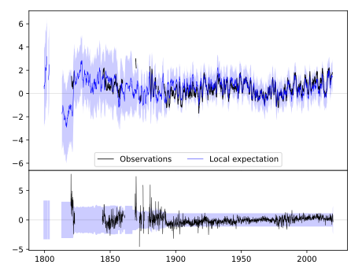
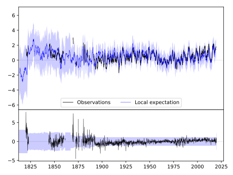
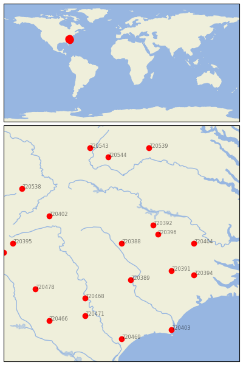

CHAPEL HILL 2 W [USA]


| Neighbour | Name | Country | Distance | Lon/Lat | Years |
|---|
| 720388 | CHAPEL HILL 2 W | USA | 2 | -79.1, 35.9 | 1820-2019 |
| 720396 | LOUISBURG | USA | 75 | -78.3, 36.1 | 1891-2019 |
| 720392 | HENDERSON 2 NNW | USA | 77 | -78.4, 36.3 | 1892-2019 |
| 720389 | FAYETTEVILLE PWC | USA | 90 | -78.9, 35.1 | 1871-2019 |
| 720391 | GOLDSBORO 4 SE | USA | 119 | -78.0, 35.3 | 1856-2019 |
| 720404 | TARBORO 1 S | USA | 144 | -77.5, 35.9 | 1871-2019 |
| 720468 | CHERAW | USA | 151 | -79.9, 34.7 | 1882-2019 |
| 720402 | MT AIRY 2 W | USA | 158 | -80.7, 36.5 | 1889-2019 |
| 720394 | KINSTON 7 SE | USA | 164 | -77.5, 35.2 | 1883-2019 |
| 720471 | DARLINGTON | USA | 192 | -79.9, 34.3 | 1893-2019 |
| 720478 | WINTHROP UNIV | USA | 204 | -81.0, 34.9 | 1893-2019 |
| 720544 | LEXINGTON | USA | 212 | -79.4, 37.8 | 1861-2019 |
| 720395 | LENOIR | USA | 216 | -81.5, 35.9 | 1871-2019 |
| 720469 | CONWAY | USA | 233 | -79.1, 33.8 | 1888-2019 |
| 720403 | SOUTHPORT 5 N | USA | 233 | -78.0, 34.0 | 1822-2019 |
| 720401 | MORGANTON | USA | 235 | -81.7, 35.7 | 1879-2019 |
| 720538 | BURKES GARDEN | USA | 237 | -81.3, 37.1 | 1892-2019 |
| 720466 | CAMDEN 3 W | USA | 238 | -80.7, 34.2 | 1893-2019 |
| 720539 | CHARLOTTESVILLE 2W | USA | 239 | -78.5, 38.0 | 1837-2019 |
| 720543 | HOT SPRINGS | USA | 241 | -79.8, 38.0 | 1892-2019 |